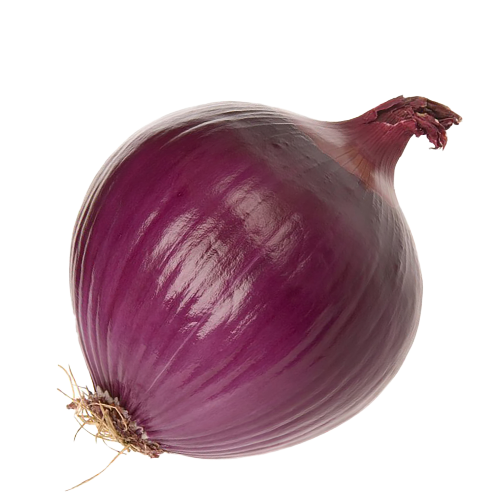
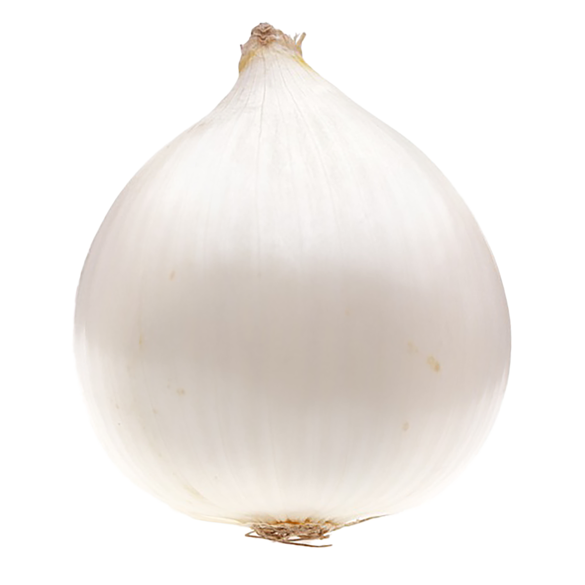
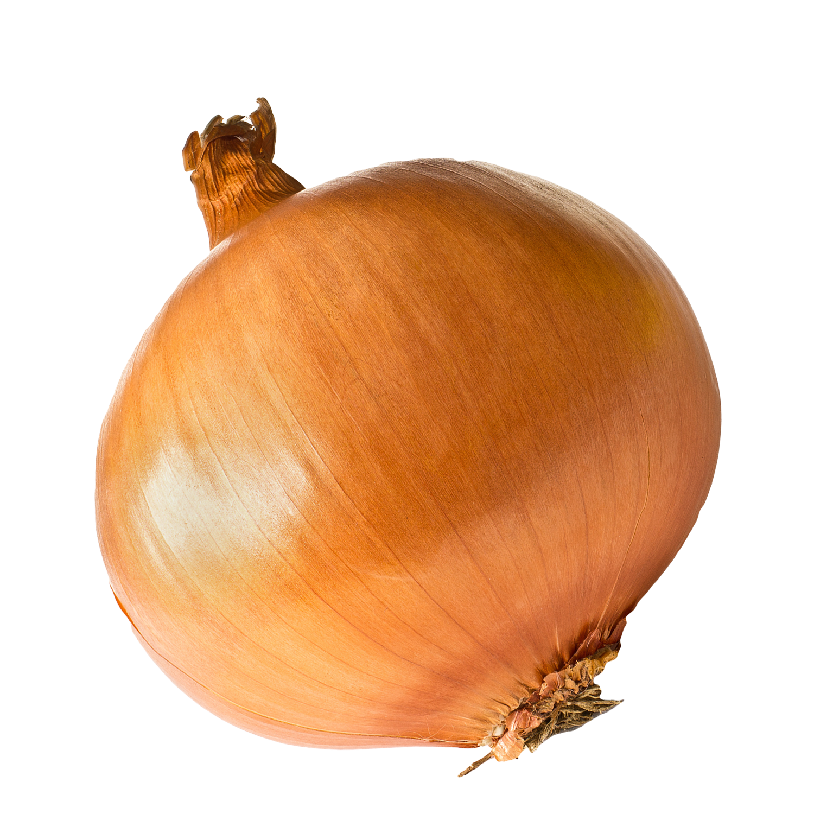

red onion
Spicier and crisper. Better raw in a salad or in a marinade. Tip: if you want the bite of the onion without the acrid taste, soak it in cold water when eating raw to take a bit of the edge off.

white onion
A sweeter and milder onion. Good for dicing and serving raw on sandwiches or salads.

yellow onion
Most common and all around onion for cooking. Great for the base of a fried rice or caramelizing.